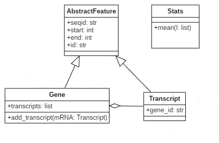

POO Python suite
Introduction
Maintenant que nous avons abordé la POO par des exemples simples, nous allons pouvoir rajouter quelques notions plus complexes qui mettent en avant l'intérêt de l'approche objet. De la même façon que pour l'atelier précédent, nous allons extraire du code de logiciel, qui nous servira de support au explication.
Encapsulation: public, privé, protected et convention de nommage
Nous allons tout d'abord aborder la notion d'encapsulation, qui repose sur le fait d'authoriser l'accès à des attributs ou des méthodes dans des situations particulières. Ainsi, un attribut de type privé ne sera accessible que par la classe qui possède l'attribut, dans le cas de protégé l'attribut sera aussi accessible par les classes filles (héritage) et dans le cas publique, il n'y a pas de restriction. En python pour différencier les 3 types on utilise les _. Ainsi on ajoute 2 _ pour le type privé, 1 _ pour protégé. Il n'y a rien à faire dans le cas publique. Dans le cas de Python, il est important de comprendre que l'encapsulation n'est pas quelque-chose d'important par rapport à l'esprit du langage qui se veut simple. Ainsi, il n'y a pas de mécanisme fort d'encapsulation, ni de pratique commune, chacun peux implementer des fonctionnements différents.
Voici un exemple d'une classe Network de la biopython (ici). Nous allons utiliser ce code pour visualiser différents mécanismes possibles.
Implementation initiale:
class System(object):
"""Abstraction for a collection of reactions.
This class is used in the Bio.Pathway framework to represent an arbitrary
collection of reactions without explicitly defined links.
Attributes:
- None
"""
def __init__(self, reactions=()):
"""Initialize a new System object."""
self.__reactions = set(reactions)
def __repr__(self):
"""Return a debugging string representation of self."""
return "System(" + ",".join(map(repr, self.__reactions)) + ")"
def __str__(self):
"""Return a string representation of self."""
return "System of " + str(len(self.__reactions)) + \
" reactions involving " + str(len(self.species())) + \
" species"
def add_reaction(self, reaction):
"""Add reaction to self."""
self.__reactions.add(reaction)
def remove_reaction(self, reaction):
"""Remove reaction from self."""
self.__reactions.remove(reaction)
def reactions(self):
"""Return a list of the reactions in this system.
Note the order is arbitrary!
"""
# TODO - Define __lt__ so that Reactions can be sorted on Python?
return list(self.__reactions)
Ainsi, si vous appelez directement l'attribut privé __reactions, vous obtenez une erreur:
from Bio.Pathway import System, Reaction
reac1 = Reaction()
reac2 = Reaction()
syst = System((reac1, reac2))
print(syst.__reactions)
Traceback (most recent call last):
File "./python-s2-implementation.py", line 8, in <module>
print(syst.__reactions)
AttributeError: 'System' object has no attribute '__reactions'
Vous êtes obligés, d'utiliser la méthode d'accès proposée: reactions()
print(syst.reactions())
[Reaction({},[],None,0)]
Mais il faut savoir que Python triche, il renomme simplement l'attribut de façon à le masquer. Il reste accessible avec cette petite astuce:
# ref instance._Class__nameAttribute
print(syst._System__reactions)
set([Reaction({},[],None,0)])
Implementation avec accesseurs
Nous allons faire une implementation basique avec nos propres accesseurs (=mutators)
class System(object):
def __init__(self, reactions=()):
"""Initialize a new System object."""
self.__reactions = set(reactions)
def get_reactions(self):
return self.__reactions
def set_reactions(self, reactions):
self.__reactions = set(reactions)
Implementation avec accesseurs dunder
Nous allons remplacer nos accesseurs "maison" par des méthodes dunder. Cette implementation qui n'a pas vraiement d'intérêt, permet de comprendre que l'accès ou la modification des valeurs des attributs d'objet se fait à travers des méthodes dunder. On va pouvoir modifier le comportement de ces méthodes en autorisant par exemple l'accès aux attributs privés. On va ainsi garder la convention de nommage double _ pour spécifier le type privé, mais néanmoins pouvoir accéder aux données.
class System(object):
def __init__(self, reactions=()):
"""Initialize a new System object."""
self.__reactions = set(reactions)
def __getattr__(self, name):
if name.startswith("__"):
# get private attribute
return self.__dict__["".join(["_",self.__class__.__name__,name])]
else:
return self.__dict__[name]
def __setattr__(self, name, value):
if name.startswith("__"):
# set private attribute
self.__dict__["".join(["_",self.__class__.__name__,name])]=value
else:
self.__dict__[name]=value
Implementation avec décorateurs
Pour finir, je vous propose de voir une implémenation avec un décorateur, particularité du langage Python. Nous reviendrons dans un atelier futur sur les décorateurs, pour l'instant vous pouvez simplement retenir qu'un décorateur est une fonction qui va permettre d'executer des pré/post traitements lorsqu'il est associé à une autre fonction/méthode. Dans ce cas nous allons utiliser des décorateurs déjà fournis par le langage Python, "Property", à savoir qu'il est tout à fait possible de coder ses propores décorateurs. Pour plus d'info un très bon blog avec de très bons liens et ressources ici
class System(object):
def __init__(self, reactions=()):
"""Initialize a new System object."""
self.__reactions = set(reactions)
@property
def reactions(self):
return self.__reactions
@reactions.setter
def reactions(self, reactions=()):
self.__reactions = set(reactions)
reac1 = Reaction("1")
reac2 = Reaction("1")
syst = System((reac1, reac2))
print(syst.reactions)
syst.reactions = (reac1, Reaction("2"))
print(syst.reactions)
Implementation avec property()
L'implementation des décorateurs vu au dessus est inspiré de la primitive property() (property(fget=None, fset=None, fdel=None, doc=None))qui peut aussi permettre d'implémenter un accès aux données:
class System(object):
def __init__(self, reactions=()):
"""Initialize a new System object."""
self.__reactions = set(reactions)
def __get_reactions(self):
return self.__reactions
def __set_reactions(self, reactions=()):
self.__reactions = set(reactions)
reactions=property(__get_reactions, __set_reactions)
reac1 = Reaction("1")
reac2 = Reaction("1")
syst = System((reac1, reac2))
print(syst.reactions)
syst.reactions = (reac1, Reaction("2"))
print(syst.reactions)
Nous avons vu ici le mécanisme de decorateur et de property pour contrôler l'accès aux données. Attention, il est recommandé d'éviter ce genre d'implementation si il y a nécéssité d'accès important et récurrent aux données.
Si nous résumons cette partie, il faut garder à l'esprit que la notion d'encapsulation en python n'est pas aussi restrictive que dans d'autres langages comme Java par exemple. Elle est surtout utilisée pour vous aider à structurer votre code en choisissant d'exposer plus ou moins certaines parties du code. L'encapsulation se fait par convention de nommage et il est possible d'utiliser plusieurs mécanismes pour accéder aux données ou méthodes.
Attributs de Classe, methodes de Classe, méthodes statiques
Attributs de Classe
Les attributs de classe sont des attributs liés au type de la classe et non à une instance de celle-ci. Reprenons notre classe System et rajoutons un attribut de classe qui va permettre de connaitre le nombre d'instance en cours de la classe. Celui se rajoute directement sous la déclaration de la classe hors de la méthode d'initialisation.
class System(object):
nbSystems = 0
def __init__(self, reactions=()):
"""Initialize a new System object."""
self.__reactions = set(reactions)
self.__class__.nbSystems += 1
def __del__(self):
self.__class__.nbSystems -= 1
if __name__ == "__main__":
reac1 = Reaction()
reac2 = Reaction()
syst = System((reac1, reac2))
print(System.nbSystems)
syst = System([reac1])
print(System.nbSystems)
syst2 = System([reac1])
print(System.nbSystems)
del(syst)
print(System.nbSystems)
1
1
2
1
A chaque fois qu'un nouvel objet est initialisé, le compteur nbSystems est incrémenté de 1. De même si un objet est supprimé, le compteur décroit de 1.
Méthodes de Classe - Méthodes statiques
Il est possible aussi d'avoir des méthodes sur des classes qui sont utilisables s'en avoir instancié un objet au préalable. Il y a les méthodes de classe, dont le rôle est en général de permettre l'instanciation d'objet différemment que par l'instanciation normale. Ces méthodes ont simplement besoin d'avoir en argument le type de la classe. Il exsite aussi les méthodes statiques, qui elles n'ont aucun pré-requis et peuvent être directement appelées depuis le type de la classe. Elles sont souvent utilisées pour faire des classes dites utilitaires.
Modifions notre classe System en créant une méthode de classe qui va nous permettre de générer un nouveau System en réunissant une liste de System passée en arguments. Simultanément, nous allons implémenter une méthode statique qui va nous permettre d'avoir la somme des réactions présents dans une liste de System.
class System(object):
nbSystems = 0
def __init__(self, reactions=()):
"""Initialize a new System object."""
self.__reactions = set(reactions)
self.__class__.nbSystems += 1
def __del__(self):
self.__class__.nbSystems -= 1
@property
def reactions(self):
return self.__reactions
@reactions.setter
def reactions(self, reactions=()):
self.__reactions = set(reactions)
@classmethod
def merge_systems(cls,systems=[]):
lreactions = []
for sys in systems:
lreactions.extend(sys.reactions)
return cls(set(lreactions))
@staticmethod
def count_reactions(systems=[]):
return sum([len(syst.reactions) for syst in systems])
if __name__ == "__main__":
syst = System(("reac1", "reac2"))
print(System.nbSystems)
print(syst.reactions)
syst2 = System(("reac1", "reac3"))
print(System.nbSystems)
print(syst2.reactions)
syst3 = System.merge_systems([syst,syst2])
print(System.nbSystems)
print(syst3.reactions)
print(System.count_reactions([syst,syst2,syst3]))
1
set(['reac1', 'reac2'])
2
set(['reac1', 'reac3'])
3
set(['reac1', 'reac2', 'reac3'])
7
Pour info, il est possible de ne pas utiliser de decorator pour spécifier le type classmethod ou staticmethod en utilisant des primitives:
def merge_systems(cls,systems=[]):
lreactions = []
for sys in systems:
lreactions.extend(sys.reactions)
return cls(set(lreactions))
merge_systems = classmethod(merge_systems)
def count_reactions(systems=[]):
return sum([len(syst.reactions) for syst in systems])
count_reactions = staticmethod(count_reactions)
Héritage, Polymorphisme, Surchage d'opérateurs
L'héritage consiste à dériver des classes en sous-classes. Une sous-classe (classe fille) hérite alors de toutes les caractéristiques (attributs, méthodes) de la classe (classe mère). La classe fille peut en plus ajouter ses propres méthodes/attributs, ou même modifier des méthodes existantes, dans ce cas on parle de surcharge d'opérateurs. La classe fille est une spécilisation de la classe mère. Pour exemple, prenons une partie du code de l'outil web Galaxy et plus précisement l'implémentation des types d'exceptions:
class MessageException(Exception):
"""Most generic Galaxy exception - indicates merely that some exceptional condition happened."""
# status code to be set when used with API.
status_code = 400
# Error code information embedded into API json responses.
err_code = "UNKNOWN"
def __init__(self, err_msg=None, type="info", **extra_error_info):
self.err_msg = err_msg or self.err_code
self.type = type
self.extra_error_info = extra_error_info
def __str__(self):
return self.err_msg
class DuplicatedSlugException(MessageException):
status_code = 400
err_code = "USER_SLUG_DUPLICATE"
class DuplicatedIdentifierException(MessageException):
status_code = 400
err_code = "USER_IDENTIFIER_DUPLICATE"
if __name__ == "__main__":
print(MessageException())
print(MessageException("unknown"))
print(DuplicatedSlugException())
print(DuplicatedSlugException("duplicate"))
résultats:
UNKNOWN
unknown
USER_SLUG_DUPLICATE
duplicate
Dans le cas où un message est passé à l'exception demandée, c'est le message en argument qui est affiché. Sans message explicite, c'est l'err_code qui est retourné selon la classe. L'affichage est réalisé grâce à l'implémentation de la méthode __str__ dans la classe mère MessageException.
Nous allons maintenant réaliser une surcharge de la méthode __str__ dans la classe DuplicatedIdentifierException afin de spécialiser son affichage.
class MessageException(Exception):
"""Most generic Galaxy exception - indicates merely that some exceptional condition happened."""
# status code to be set when used with API.
status_code = 400
# Error code information embedded into API json responses.
err_code = "UNKNOWN"
def __init__(self, err_msg=None, type="info", **extra_error_info):
self.err_msg = err_msg or self.err_code
self.type = type
self.extra_error_info = extra_error_info
def __str__(self):
return self.err_msg
class DuplicatedSlugException(MessageException):
status_code = 400
err_code = "USER_SLUG_DUPLICATE"
class DuplicatedIdentifierException(MessageException):
status_code = 400
err_code = "USER_IDENTIFIER_DUPLICATE"
def __str__(self):
return f"my specialized method:{self.err_msg}"
if __name__ == "__main__":
print(MessageException())
print(MessageException("unknown"))
print(DuplicatedSlugException())
print(DuplicatedSlugException("duplicate"))
print(DuplicatedIdentifierException(""))
print(DuplicatedIdentifierException("duplicate"))
résulats:
UNKNOWN
unknown
USER_SLUG_DUPLICATE
duplicate
my specialized method:USER_IDENTIFIER_DUPLICATE
my specialized method:duplicate
En surchargeant notre methode, nous avons introduit un polymorphisme d'héritage. La méthode __str__ est devenue polymorphique, car elle propose une implémentation différente selon la classe de l'objet.
Abstraction, Interfaces
Nous allons maintenant nous intéresser très brièvement au concept de classe abstraite et d'interface. Pour cet atelier, ce paragraphe sera relativement court pour ne pas tout de suite introduire trop d'élèment complexe du langage Python. En effet cette partie sera grandement plus couverte dans un prochain atelier avec des approches plus "pythonesques" via le module abc, les Abstract Base Class du module collections et les metaclass. Pour l'instant concentrons nous sur une approche généraliste.
De façon simple, une classe abstraite est une classe qui ne peut pas être instanciée, mais dont il faut absolument hériter pour en utiliser les méthodes. Par ailleurs, ses méthodes peuvent être implémentées ou non. Dans ce dernier cas, il est alors nécessaire de les surcharger dans les classes filles.
Afin d'illustrer ce concept, nous allons nous intéresser à la classe abstraite AbstractCommandline de la Biopython. Cette classe sert de base pour appeler un programme et l'executer. Elle contient tout un ensemble de méthodes pour construire la ligne de commande à lancer, ainsi que lancer le programme demandé. Grâce à ce mécanisme, la création d'un nouveau "wrapper" d'outil est très simplifié. Dans ce cas précis, la seule contrainte demandé au classe filles est de définir la liste des paramètres nécéssaires à la construction de la ligne de commande. Voyons ça en détails:
class AbstractCommandline(object):
r"""Generic interface for constructing command line strings.
This class shouldn't be called directly; it should be subclassed to
provide an implementation for a specific application.
...
"""
parameters = None # will be a list defined in subclasses
def __init__(self, cmd, **kwargs):
"""Create a new instance of a command line wrapper object."""
# Init method - should be subclassed!
#
# The subclass methods should look like this:
#
# def __init__(self, cmd="muscle", **kwargs):
# self.parameters = [...]
# AbstractCommandline.__init__(self, cmd, **kwargs)
#
self.program_name = cmd
try:
parameters = self.parameters
except AttributeError:
raise AttributeError("Subclass should have defined self.parameters")
# Create properties for each parameter at run time
aliases = set()
...
Utilisation de la classe abstraite pour générer une commande samtools view:
class SamtoolsViewCommandline(AbstractCommandline):
"""Command line wrapper for samtools view.
...
def __init__(self, cmd="samtools", **kwargs):
"""Initialize the class."""
self.program_name = cmd
self.parameters = [
_StaticArgument("view"),
_Switch(["-b", "b"], "Output in the BAM format"),
...
_Argument(["region"], "Region", is_required=False),
]
AbstractCommandline.__init__(self, cmd, **kwargs)
Modifions la classe abstraite de façon à ce qu'elle impose aux classes filles l'implementation d'une méthode dry_run:
class AbstractCommandline(object):
...
def dry_run(self):
raise NotImplementedError('need to be implemented')
Ainsi, dans le cas où une classe fille souhaiterait appeler la méthode dry_run, si cette dernière n'implemente pas sa propre méthode, une exception sera levée.
Implémentation
L'exercice consiste à se placer dans la situation de lecture d'un fichier d'annotation sur lequel on souhaite faire quelques statistiques basiques. Pour cela nous allons implémenter une classe Abstraite AbstractFeature qui servira de base à la création de 2 classes filles Gene et Transcript. Ces 2 sous-classes ont aussi une relation de composition, puisqu'un gène peut avoir 1 ou plusieurs transcripts. En
parallèle, nous allons implémenter une classe "utilitaire" Stats, qui nous permettra de réaliser des statistiques simples sur nos Features. Pour vous aider voici la modélisation de UML de l'implémentation attendue:

Implementez les 4 classes dans le même fichier et rajoutez le code suivant, à la suite des 4 classes.
if __name__ == "__main__":
gene1 = Gene("chr1", 1000, 2000, "gene1")
mRNA1 = Transcript("chr1", 1000, 2000, "mRNA1", "gene1")
gene2 = Gene("chr1", 10000, 12000, "gene2")
mRNA2 = Transcript("chr1", 10000, 12000, "mRNA2", "gene2")
mRNA3 = Transcript("chr1", 10000, 11400, "mRNA3", "gene2")
print(gene1+gene2)
print(sum((gene1,gene2)))
print(f"Gene mean length: {Stats.mean([gene1,gene2])}")
print(f"Transcript mean length: {Stats.mean([mRNA1,mRNA2,mRNA3])}")
Executez le script, voici le résultat que vous devez obtenir:
3002
3002
Gene mean length: 1501.0
Transcript mean length: 1467.6666666666667
La solution est ici
Retour sur l'atelier
Nous avons rajouter de nouveaux éléments dans l'utilisation de la POO en Python.
Pour rappel, Python est un langage assez permissif et ne propose pas de typage fort. L'implementation de certains concepts objets peut se faire à l'encontre de la philosophie du langage, mais peut néanmoins être intéressant pour structurer son code et son programme. Dans un futur atelier nous aborderons des concepts très "pythonesques" que sont le duck-typing, les metaclasse et le module ABC.
Références
Quelques liens intéressants qui ont servi à faire cet atelier: